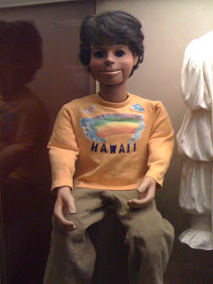

"Bob" in Smithsonian
2/3/2010
From Jay Johnson
The original Bob, I used for the first couple of years on SOAP, is in the Pop Culture and Television Section of The Smithsonian Institution. He currently resides next to an original Oscar the Grouch, Sid Caesar's hat and Seinfeld's Puffy shirt.
Bob had been on display at Valentine Vox's museum in Vegas for a while. When that closed I started trying to find another home for him. The Washington Museum was immediately interested but needed lots of details and provenance. I was told that I had one of the most complete histories on any item they had ever had submitted. I had actually done a lot of work in that direction for Valentine.
The process started back in 2006 and took about 9 months. A committee had to agree that the donation met certain standards of what the collection stands for... very formal. I was informed that Bob received a unanimous vote. Finally in May of 2007 I turned him over to a representative during a ceremony at Sardi's in New York City.... in front of the caricature of me and Bob on the wall. (The day before that ceremony I was nominated for the Tony and it was my wedding anniversary... they say good things always come in threes.)
The museum was closed for almost a year while they renovated the building. I think the building reopened the first of 2008 and Bob went on display.
* * * * *
Note from Clinton: The above was written by Jay in answer to my question to him as to how Bob came to reside in the Smithsonian. The question was inspired by the photo above which was sent to me by Terry Ottinger who had visited the Museum.
{kind=link}

The original Bob, I used for the first couple of years on SOAP, is in the Pop Culture and Television Section of The Smithsonian Institution. He currently resides next to an original Oscar the Grouch, Sid Caesar's hat and Seinfeld's Puffy shirt.
Bob had been on display at Valentine Vox's museum in Vegas for a while. When that closed I started trying to find another home for him. The Washington Museum was immediately interested but needed lots of details and provenance. I was told that I had one of the most complete histories on any item they had ever had submitted. I had actually done a lot of work in that direction for Valentine.
The process started back in 2006 and took about 9 months. A committee had to agree that the donation met certain standards of what the collection stands for... very formal. I was informed that Bob received a unanimous vote. Finally in May of 2007 I turned him over to a representative during a ceremony at Sardi's in New York City.... in front of the caricature of me and Bob on the wall. (The day before that ceremony I was nominated for the Tony and it was my wedding anniversary... they say good things always come in threes.)
The museum was closed for almost a year while they renovated the building. I think the building reopened the first of 2008 and Bob went on display.
* * * * *
Note from Clinton: The above was written by Jay in answer to my question to him as to how Bob came to reside in the Smithsonian. The question was inspired by the photo above which was sent to me by Terry Ottinger who had visited the Museum.